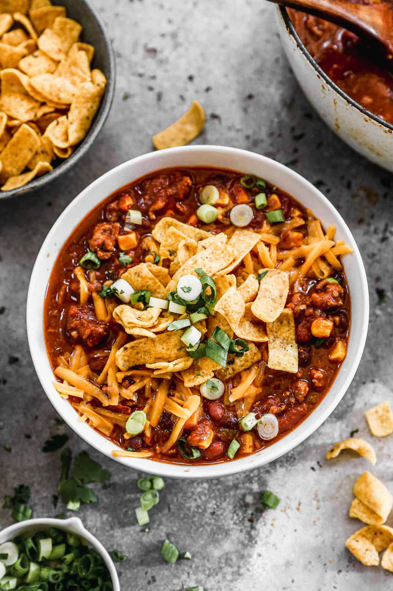

Easy Taco Soup
Ingredients
- 1 pound lean ground beef
- 1 small onion, chopped
- 1 can (15 oz) kidney beans, drained
- 1 can (15 oz) black beans, drained
- 1 can (17 oz) corn, drained
- 1 can (8 oz) tomato sauce
- 2 cups beef broth
- 1 packet taco seasoning (or chili powder & cumin)
Instructions
- In a large soup pot, brown the ground beef and onion over medium heat until meat is cooked through. Drain grease.
- Add the beans, corn, tomato sauce, beef broth, and taco seasoning to the pot.
- Stir well to combine.
- Bring to a boil, then reduce heat and simmer for 20-25 minutes.
- Serve warm with tortilla chips, sour cream, and shredded cheese.
Source: Tastes Better From Scratch